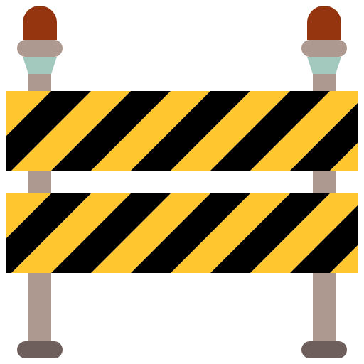

This page is dedicated to different projects in N8N, which is a powerful tool used for automation.
This is how I have set up my private n8n environment, hosted on my NixOS desktop machine.
It is possible, and in most cases prefered, to host your n8n on a server. That could be either remote or local, depending on your setup.
In my case, I just run it on my private computer for personal purposes.
1. Edit your /etc/nixos/configuration.nix
{
virtualisation.docker.enable = true;
# Or add "docker" in your already existing "extraGroups" list, if you want sudo access
users.users..extraGroups = [ "docker" ]; }
bash:
$ sudo nixos-rebuild switch
2. Create a folder for n8n’s data
bash:
$ mkdir -p ~/.n8n Run n8n, bash:
(reminder that it is important to include the \ in each line, otherwise it will run the commands prematurely)
$ docker run -it --rm \
--name n8n \
-p 5678:5678 \
-v ~/.n8n:/home/node/.n8n \
n8nio/n8n
# "-p 5678:5678" exposes the editor on http://localhost:5678
# "-v ~/.n8n:/home/node/.n8n" mounts a persistent volume so your workflows survive container restarts
You can now visit your n8n environment at http://localhost:5678 in your browser
3. Keep it running in the background, autorun when rebooting machine
Create a directory for your setup, bash:
$ mkdir -p ~/n8n-docker
# move to the new directory
$ cd ~/n8n-docker
Create a docker-compose.yml file in ~/n8n-docker:
services:
n8n:
image: n8nio/n8n
restart: always
ports:
- "5678:5678"
volumes:
- ~/.n8n:/home/node/.n8n
If you need to manually start n8n for some reason, run this bash command:
$ docker compose up -d
To check if docker is running:
$ docker ps
If done correctly, your n8n is hosted and run through docker, and should start automatically with your machine. This exact setup works for my NixOS 24.11
This guide helps you connect your n8n to various Google Drive APIs...
 *** UNDER CONSTRUCTION ***